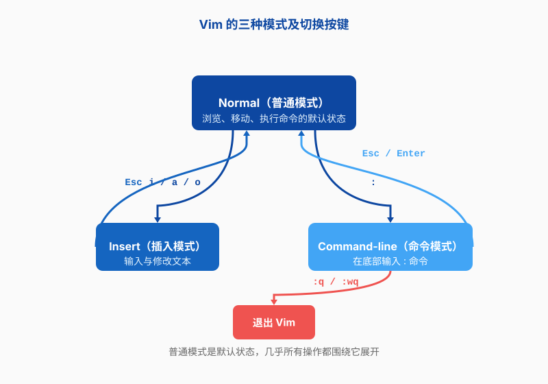
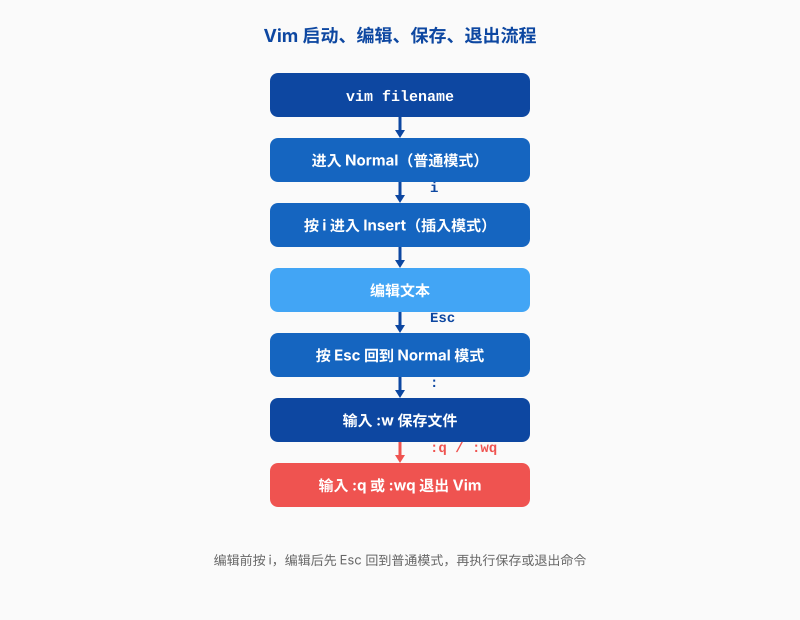
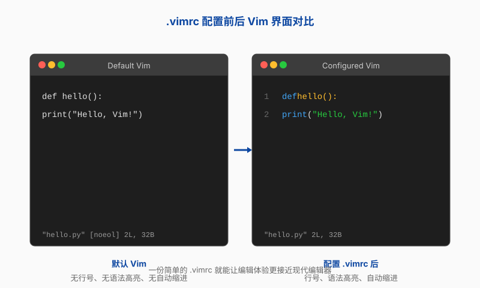

第六章 Vim 文本编辑器
第五章讲完 Git，你的代码和论文总算有了“时光机”。但还有一个更日常的问题没解决：当你通过 SSH 连上课题组的服务器，面对一行行配置文件和 Python 脚本时，到底用什么来改它们？
在本地笔记本上，你可能习惯 VS Code、PyCharm 或者 Sublime，鼠标点一点就能改。但远程服务器上往往没有图形界面，即使有，把代码来回同步也很麻烦。这时候你需要一个能在终端里直接工作的文本编辑器。而在 Linux 世界里，最常青、最无处不在的终端编辑器就是 Vim。
这一章的任务不是把你变成 Vim 高手，而是让你在最常见的场景里不卡壳：打开一个文件、改几行配置、保存退出、查找替换一个变量名。学完这些，至少下一次服务器上需要改训练脚本时，你不会手足无措。
为什么服务器上还得学 Vim？
很多人第一次听说 Vim，反应是：“都什么年代了，还用这种老古董？”这个质疑很合理。Vim 的前身 Vi 诞生于 1976 年，比 Linux 还早十几年。它长得不现代，入门曲线陡峭，刚开始甚至不知道怎么退出。但它有一个无可替代的优势：几乎所有 Linux 服务器上都预装了它。
想象这样一个场景：深夜十一点，你通过 SSH 连上实验室的 GPU 服务器（第二章讲过怎么用 SSH 和密钥登录），准备跑一组对比实验。刚启动训练，发现 config.yaml 里写错了学习率。你不可能在这个时候打开本地的 VS Code，再远程同步过去；更不可能让 IT 管理员临时给你装一个图形编辑器。你需要的，是在终端里几秒钟内打开文件、改完、保存、重启训练。
student@lab-server:~/battery-ml$ vim config.yaml
# 改完学习率，保存退出
student@lab-server:~/battery-ml$ python train.py --config config.yaml
Vim 就是那个兜底工具。它不像 Nano 那样简单好懂，也不像 Emacs 那样自成一体，更不像 VS Code 那样华丽。但它是服务器环境下的“通用语言”：不管这台机器装的是 RHEL、Ubuntu 还是 CentOS，也不管你有没有 sudo 权限，vim 大概率都能用。
对做 AI 和材料科研的人来说，这种“兜底”能力尤其重要。训练脚本、Slurm 任务提交文件、Conda 环境配置、LaTeX 论文源文件，这些东西经常在服务器上直接修改。你当然可以每次都把文件下载到本地、改完再上传，但如果修改很频繁，这种来回搬运本身就是一种低效。
所以学 Vim 的理由可以总结成一句话：不是为了炫技，而是为了在只剩终端可用的时候，依然能干活。
Vim 的三种模式
Vim 最让新手困惑的地方，是它的“模式”概念。普通编辑器里，你打开文件就能直接打字；Vim 却不是这样。它把编辑行为拆成了三种模式，每种模式下同样的按键含义完全不同。理解了这一点，Vim 就学了一半。
正常模式：移动和发号施令
打开 Vim 后，你默认处在正常模式（Normal Mode）。在这个模式下，你不能直接输入文字——没错，你敲的字母会被当成命令。比如按 j 是光标下移，按 dd 是删除一整行，按 u 是撤销。
这个设计一开始很反直觉：我想输入一个 j，它怎么往下跑了？但背后的逻辑是，编辑代码和配置文件时，移动光标、删除、复制、粘贴这些操作的频率，远远高于连续输入大段文字。正常模式让这些高频操作可以用最近的键位完成，不用每次都伸手去够方向键或鼠标。
插入模式：像普通编辑器一样打字
当你真正需要输入文字时，要进入插入模式（Insert Mode）。最常用的进入方式是按 i——也就是 insert 的首字母。按下 i 后，屏幕下方通常会显示 -- INSERT --，这时候你就可以正常打字了。
i 在光标前插入，a 在光标后插入，o 在当前行下方新开一行插入，三者只是入口位置不同。
改完想回到正常模式，按 Esc。很多新手会忘了这一步，结果一直卡在插入模式，想保存文件却发现 :w 被输入成了文字。记住一个口诀：不编辑就回正常模式。
命令行模式：保存、退出和高级操作
第三种是命令行模式（Command-line Mode）。在正常模式下按冒号 :，光标会跳到屏幕底部，等待你输入命令。保存文件用 :w，退出用 :q，保存并退出用 :wq 或 :x。
查找和替换也在这里进行：/pattern 查找，:%s/old/new/g 全局替换。我们后面会细讲这些命令。
三种模式怎么切换
三种模式的关系可以画成一张简单的图。正常模式是中心枢纽：从正常模式按 i 进入插入模式，按 : 进入命令行模式；插入模式和命令行模式都要先按 Esc 回到正常模式，再决定下一步。

这张图建议你刚开始用 Vim 时贴在桌边。最常见的卡壳不是忘了某个命令，而是忘了自己现在处于哪种模式。按 Esc 回到正常模式，通常能把你从各种混乱中救出来。
打开、编辑、保存、退出
模式概念清楚之后，接下来就是最常用的操作闭环：打开文件、改东西、保存、退出。这个闭环熟练了，80% 的 Vim 使用场景你就都能应付。
打开文件
在终端里用 vim 命令加文件名就能打开。如果文件不存在，Vim 会新建一个空白文件，等你保存时才真正创建。
student@lab-server:~/battery-ml$ vim config.yaml
student@lab-server:~/battery-ml$ vim train.py
你也可以一次打开多个文件，或者用通配符：
student@lab-server:~/battery-ml$ vim *.py
打开后，Vim 会先处在正常模式。如果你此时就开始打字，屏幕上不会正常显示文字，而是触发各种命令。这是每个 Vim 初学者都踩过的坑。
编辑与保存
假设你打开的是训练脚本 train.py，想改学习率。操作流程是：
- 用方向键或
hjkl把光标移动到要改的数字上； - 按
i进入插入模式； - 修改数字；
- 按
Esc回到正常模式； - 输入
:w保存。
# 在 Vim 内部
i # 进入插入模式
0.001 # 把 0.01 改成 0.001
Esc # 回到正常模式
:w # 保存
保存时屏幕下方会显示类似 "train.py" 45L, 1.2K written 的字样，表示写入成功。如果文件是只读的，Vim 会提示你用 :w! 强制写入，但通常你需要有对应的文件权限（第三章讲过权限和 chmod）。
退出文件
保存完想退出，回到正常模式后输入 :q。如果已经保存过，文件会干净地关闭；如果还有未保存的修改，Vim 会拒绝退出，怕你误丢东西。
# 已保存，正常退出
:q
# 有未保存修改，强制退出且不保存
:q!
# 保存并退出，一步完成
:wq
还有一个快捷键组合 ZZ（大写 Z，按两次），效果等同于 :wq。不用按回车，按完直接退出。这个快捷键在需要快速收工时很方便。
打开、编辑、保存、退出的完整流程见图 6.2。

移动光标与基础编辑
学会了打开和保存，下一步是在文件里自由移动。Vim 的正常模式把最常用的移动键放在了主键区，目的是让你的手指不用离开打字位置。
移动光标
最基本的四个方向键是 h、j、k、l，分别对应左、下、上、右。刚开始你可能觉得方向键更顺手，但练熟这四个键后，编辑效率会明显提升。
除了单字符移动，Vim 还支持按词移动：
w：跳到下一个单词开头；b：跳到当前或上一个单词开头；e：跳到当前或下一个单词结尾。
在大文件里快速定位：
gg：跳到文件第一行；G：跳到文件最后一行；42G或:42：跳到第 42 行。
这些命令看起来零散，但组合起来很强大。比如你要改配置文件里第 30 行的 batch size，可以 :30 直接定位，按 w 几次找到数字，再 i 进入插入模式修改。
删除、复制与粘贴
删除一行用 dd，复制一行用 yy，粘贴用 p。这三个命令是 Vim 里最高频的组合之一。
dd：删除光标所在行，同时把它放进剪贴板；yy：复制光标所在行；p：在光标下方（或后方）粘贴；x：删除光标下的一个字符。
如果你要删除多行，可以在命令前加数字。比如 3dd 会删除从光标所在行开始的连续三行，5yy 会复制连续五行。这比用鼠标选中再按 Delete 快得多，尤其在你想删掉一整段重复代码时。
# 在 Vim 内部
3dd # 删除三行
p # 把它们贴到别处
撤销与重做
改错了不用慌。u 是撤销，Ctrl+r 是重做。这两个快捷键和正常模式下的其他命令一样，按完立刻生效，不用按回车。
一个实用的技巧是：在插入模式里写了一大段文字，发现不对，直接按 Esc 再连续按 u，可以把刚才输入的内容一次性撤销。Vim 会把一次插入模式到退出之间的所有输入，当作一个完整的修改单元。
查找与替换
做科研改代码时，经常需要批量替换变量名或参数名。比如你把模型里的 learning_rate 统一改成 lr，或者把材料模拟脚本里的元素符号从 Li 改成 Na。Vim 的查找替换功能能帮你快速完成这类任务。
查找
在正常模式下按 /，然后输入要查找的内容，再按回车。Vim 会从光标位置向下搜索。
# 在 Vim 内部
/learning_rate # 查找 learning_rate
n # 跳到下一个匹配
N # 跳到上一个匹配
如果想向上搜索，用 ? 代替 /。搜索结果会高亮显示，如果高亮一直留在屏幕上有点碍眼，可以输入 :nohlsearch 或简写 :noh 清除。
替换
替换命令的格式是 :s/旧内容/新内容/选项。最常用的是全局替换：
# 在 Vim 内部
:%s/learning_rate/lr/g # 全文替换
这里 % 表示整个文件，s 是 substitute，g 是 global（每行所有匹配都替换，不只是第一个）。如果你只想替换当前行，可以省略 %：
# 在 Vim 内部
:s/learning_rate/lr/g # 只替换当前行
如果担心替换错，可以加 c 选项，让 Vim 每次替换前都询问你：
# 在 Vim 内部
:%s/learning_rate/lr/gc # 逐个确认
这个 c 选项在处理大段文字时特别有用。比如你只想替换部分匹配项，Vim 会停在每一处问你 replace with lr (y/n/a/q/l/^E/^Y)?，按 y 确认、n 跳过、q 退出。
多文件与分屏
实际工作中，你很少只打开一个文件。改训练脚本时可能同时要看配置文件，写论文时可能要在正文和参考文献之间来回切换。Vim 支持同时打开多个文件，也支持把屏幕分成几个区域。
同时打开多个文件
启动 Vim 时直接跟多个文件名：
student@lab-server:~/battery-ml$ vim train.py config.yaml
进入 Vim 后，用以下命令在文件之间切换：
:next或:n：切换到下一个文件；:prev或:N：切换到上一个文件；:files：查看当前打开的所有文件。
如果你忘了当前编辑的是哪个文件，可以输入 Ctrl+g，Vim 会在底部显示当前文件名、行号和修改状态。
分屏
在多个文件之间来回切容易晕，尤其是需要对照的时候。Vim 的分屏功能可以把屏幕切成上下或左右几块，每块显示不同文件。
:split或:sp：水平分屏；:vsplit或:vsp：垂直分屏；Ctrl+w w：在分屏之间切换光标；Ctrl+w q：关闭当前分屏。
比如你可以左边打开 train.py，右边打开 config.yaml，对照着改。改完一边按 Ctrl+w w 跳到另一边，不需要退出 Vim 再重新打开。
# 在 Vim 内部
:vsplit config.yaml # 垂直分屏打开 config.yaml
Ctrl+w w # 光标跳到另一个窗口
分屏对于改配置特别实用。你可以把原始配置和备份配置并排放在一起，一眼看出改了哪些地方，避免把 True 错写成 False。
配置 .vimrc
刚装好的 Vim 非常朴素：没有语法高亮、没有行号、Tab 键可能显示为 8 个空格。这些默认设置对写代码很不友好。好在 Vim 有一个配置文件 .vimrc，放在你的家目录下，可以一次性把它调教成顺手的工具。
一份 minimal 的 .vimrc
网上有很多“史上最强 .vimrc”，动辄两三百行，装了十几个插件。对初学者来说，那些配置不是帮忙，是添乱。你不需要一开始就那么复杂，先保证基本体验就够了。
在家目录创建 .vimrc：
student@lab-server:~$ vim ~/.vimrc
写入以下内容：
" 显示行号
set number
" 启用语法高亮
syntax on
" 把 Tab 扩展成空格
set expandtab
" 一个 Tab 显示为 4 个空格
set tabstop=4
" 自动缩进宽度
set shiftwidth=4
" 搜索时高亮匹配
set hlsearch
" 输入搜索内容时实时高亮
set incsearch
" 智能缩进
set smartindent
保存退出后，下次打开 Vim 就会生效。每一行前面的双引号 " 是 Vim 配置文件里的注释符号，表示后面的文字是说明，不是配置命令。
配置前后的对比
配置前打开 train.py，屏幕上一片白，行号没有，Python 关键字也看不出颜色。配置后，关键字、字符串、注释会有不同颜色，行号在左侧整齐排列，按 Tab 会自动变成四个空格——对 Python 这种靠缩进区分代码块的语法尤其重要。
图 6.3 展示了同一段代码在默认 Vim 和配置好 .vimrc 后的效果对比。

这里要提醒一句：不要从网上复制一大段看不懂的 .vimrc。很多配置会改变默认行为，比如改快捷键、加插件管理器，出了问题你连怎么恢复都不知道。先理解上面这几行，等遇到具体需求再慢慢加。
现代替代方案（了解即可）
Vim 不是唯一的终端编辑器。如果你只是偶尔修改一个配置文件，或者实在受不了 Vim 的模式切换，也有其他选择。
Nano：最简单易懂
Nano 是另一个常见的终端编辑器，比 Vim 友好得多。打开文件后，底部会显示常用快捷键，比如 Ctrl+O 保存、Ctrl+X 退出。你不需要记模式，直接就能打字。
Nano 适合“打开 → 改一行 → 保存退出”这种极简场景。但它的功能也弱一些：没有 Vim 强大的宏、分屏和批量替换。如果你的修改稍微复杂一点，Vim 还是更快。
Emacs：另一个极端
Emacs 和 Vim 一样历史悠久，但设计理念完全不同。Emacs 的口号是“伪装成编辑器的操作系统”，它几乎什么都能做：收发邮件、浏览网页、管理任务。学习曲线同样陡峭，不过方向不同——Vim 难在模式，Emacs 难在海量快捷键。
对科研学生来说，Emacs 的 Org mode 很有名，适合管理实验笔记和 TODO。但如果你只是需要在服务器上改脚本，Emacs 可能太重了。
VS Code 与远程开发
如果你本地机器性能足够，网络也通畅，VS Code 的 Remote-SSH 扩展是体验最好的方案。它让你在本地 VS Code 窗口里直接编辑远程服务器上的文件，保留语法高亮、补全、调试等所有功能。
第四章提到过一些让命令行更顺手的工具，VS Code 的远程开发可以看作是它们的延伸：你在本地熟悉的图形环境里操作远程文件。但前提是你能稳定连接服务器，而且服务器允许这种远程开发所需的端口转发。在某些安全策略严格的课题组机器上，这条路不一定走得通。
所以我的建议是：平时可以用 VS Code 远程开发提高效率，但 Vim 依然是必须会的保底技能。总有一天你会遇到只能 SSH、没有图形界面、Nano 还没装的情况，那时候 Vim 能救场。
学 Vim 不用追求速度和多指并用。先把打开、保存、退出、查找替换练熟，再慢慢记移动命令和 .vimrc 配置。它不会让你写代码的速度翻倍，但会让你在服务器面前不再慌张。下一章，我们就从这台服务器出发，看看它怎么与外面的世界通信。